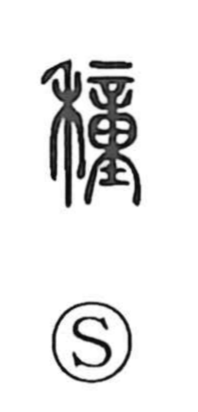

種

Uncategorized
Kun: tane | On: shu
seed ・ to sow ・ to plant ・ kind ・ type ・ species
Explanation
A phono-semantic character: the grain radical 禾 sets the scene of crops, while 重 serves as the phonetic, giving the on reading shu. In the Book of Odes (Major Odes, Sheng Min) we read 誕降嘉種, “he bestowed fine seed,” celebrating the culture hero Hou Ji, whom the gods favored with good cereal seed. In its earliest sense, 種 denotes the seeds of cereals. From that concrete meaning it naturally extends to the actions of sowing and planting, as seen in expressions like 種芸 and 種樹, and then broadens further to signify a ‘kind’ or ‘sort’ that gathers things sharing a common character, as in 種類.